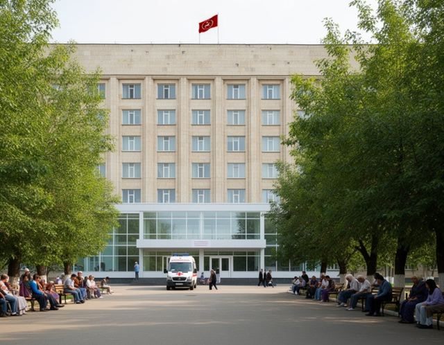

Welcome to the official site of the Talas Regional Hospital Medical Complex

The Talas Regional Hospital Medical Complex is the main referral and teaching hospital of the Irad Special Economic Zone. It has about 650 beds in eight buildings on a 15-hectare campus on Hospital Boulevard, and takes patients from all three cities and the districts: by referral, by ambulance, by transfer from other hospitals and by helicopter from the mountains.
The hospital is the main clinical base of the Faculty of Medicine of Talas State University. It comes under the Ministry of Health.
Emergency treatment is free for everyone. Call 103.
Chief Physician
Dr Yosep Temirkulov
Surgeon of the hospital since 1987, chief physician since 2013.
Administration »
Dr Yosep Temirkulov
Surgeon of the hospital since 1987, chief physician since 2013.
Administration »
Departments19 departments, beds, heads and telephones
Doctors' receptionConsultative polyclinic: who receives when
Visiting hoursWhen to come, what to bring, parcels
Paid servicesPrice list from 01.10.2026
News of the hospital
01.10.2026 New price list of paid services
01.09.2026 New academic year
14.06.2026 Donors at the hospital
03.05.2026 Day of memory, 3 May
Announcements
Influenza season. From 2 November visits to the Children's Wards and the Neonatal Intensive Care unit are allowed only to parents.
Patients on insulin are asked to bring a supply for three days when admitted for planned treatment.
MRI: the waiting time is about five weeks. Registration by referral at the Diagnostic Center, window 4.